Editable 3D Scenes from Single Hyperspectral and RGB Surgical Frames
September 2026 · Hyperspectral imaging, monocular 3D reconstruction, NVIDIA Omniverse
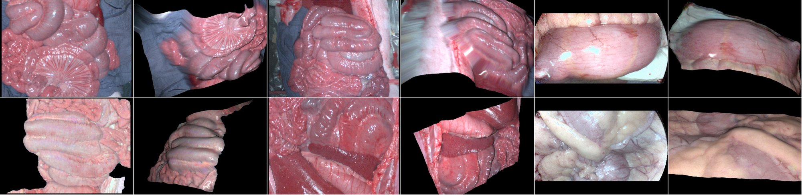
Motivation
Hyperspectral imaging in surgery measures tissue composition beyond what an RGB camera can see, which makes it useful for judging perfusion and telling tissues apart during an operation. The difficulty is data. There are only a few labelled acquisitions, and the variation that matters in practice, such as changes in viewpoint, tissue motion and illumination, is rarely recorded under control.
Each of the usual workarounds misses part of this. 2D augmentation warps the image, so it cannot produce parallax or occlusion. Generative models need the same training data that is missing in the first place. Fully simulated scenes give full control, but they neither look nor measure like real tissue, so a model trained on them learns the simulator.
In this work we take a different route. We lift a single real frame into a 3D scene that keeps its measured appearance, generate controlled variation around it, and build a surgical simulator from the same scenes in NVIDIA Omniverse. Every rendered pixel is tied to a source pixel, so labels and correspondences are known by construction. The question we set out to answer is whether variation built this way is a better source of training and test data than 2D augmentation.
Single-frame 3D reconstruction
The input is a calibrated reflectance cube, either a hyperspectral frame with 16 to 20 bands or an RGB frame. Before we lift it to 3D, we remove the traces of the light that recorded it, because anything left in the texture, such as a specular highlight, would move with the tissue in every new view.
Removing the original acquisition
First we prompt SAM 3 with the names of instruments and other non-tissue material, and exclude those pixels from the tissue surface. We then locate specular highlights with HFA-Net, a highlight detector that we adapted to hyperspectral data by sharing one mask across all wavelengths. We tuned its threshold, minimum region size and mask dilation on renders of cleaned tissue with and without a wet layer, where the true highlight positions are known. We fill the masked regions with LaMa, a neural inpainting model, run on each band separately. Finally, we compute the illumination estimate of Marigold's intrinsic image decomposition on a pseudo-RGB image and apply it as one spatial gain to every wavelength, which flattens the scope's light falloff without changing the spectral shape of any pixel.
Geometry and correspondence
We use MoGe, a monocular geometry model, to predict a 3D point and a surface normal for every pixel. We connect neighbouring points into a mesh of the visible surface, and each vertex stores the normalised image coordinate it came from. When we render a new view, we use the visible coordinate at each output pixel to sample the original reflectance cube and any label. Every spectrum therefore stays attached to the same surface point as the camera moves, and labels and correspondences are exact by construction. Pixels that reveal tissue hidden in the original frame are marked as invalid rather than filled with invented tissue.
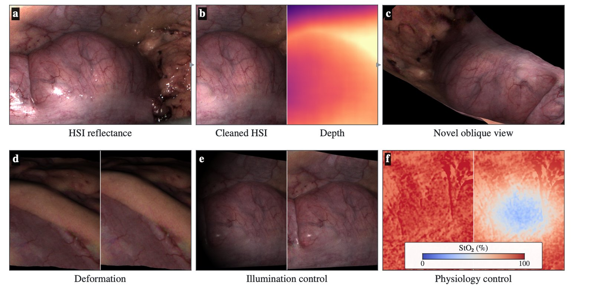
Controlled variation
Once a frame is a surface, we can vary the factors that are entangled in real data one at a time, while correspondences and labels remain exact. Each factor has bounded controls, and for domain randomisation we sample them with a low-discrepancy Sobol sequence, so that new acquisitions cover the control space evenly instead of clustering around the original settings.
Viewpoint
We move a virtual endoscope by changing its direction, distance, field of view, roll and target point. Camera positions are sampled on the upper hemisphere above the tissue and kept above the tissue horizon, because a single view contains no surface below it.
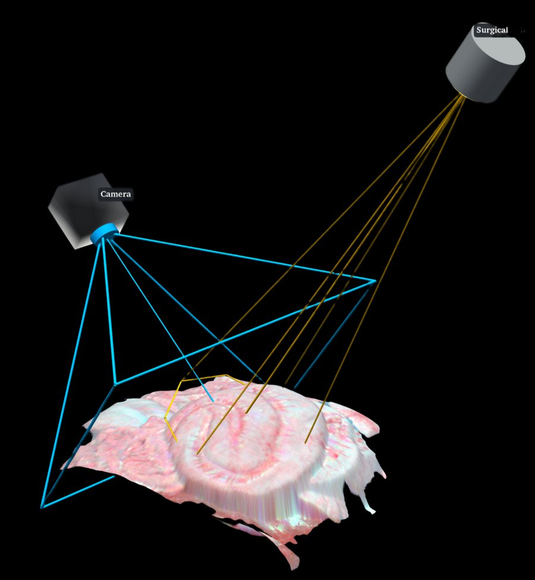
Deformation
We model tissue motion with smooth displacement fields applied to the mesh vertices. A vertex at position v moves to v′ = v + aL u(q, φ), where q is its normalised position, a the strength, L the surface size and φ a phase. Bending, twisting, folding and local displacement each use their own field u, for example a Gaussian bump for local displacement. We express the strength relative to the surface size because monocular geometry has no metric scale. The material coordinates never change, so every label and spectrum follows the same tissue through the deformation.
Illumination and reflection
We render new acquisitions with Mitsuba 3, a spectral light-transport renderer. The cleaned reflectance sits beneath a rough dielectric interface that approximates the wet tissue boundary, and we vary its roughness, specular strength and refractive index. We place a variable number of light sources around the camera and aim them at the tissue, like the light ports of an endoscope, and sample their position, intensity, beam spread and spectral power distribution. We then divide the rendered radiance by the response of a synthetic white reference, so every new view is again a reflectance image.
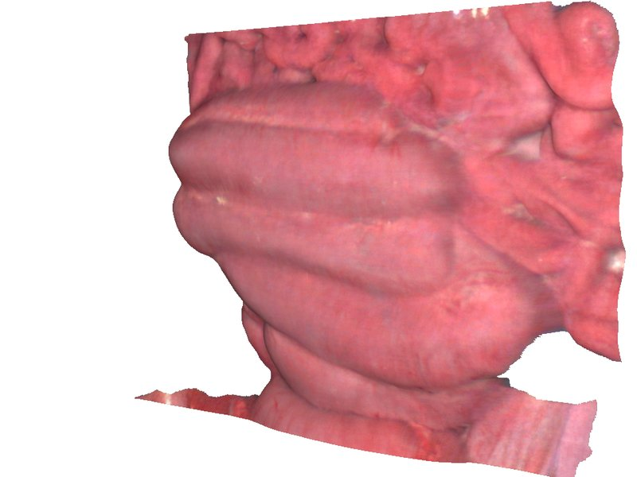
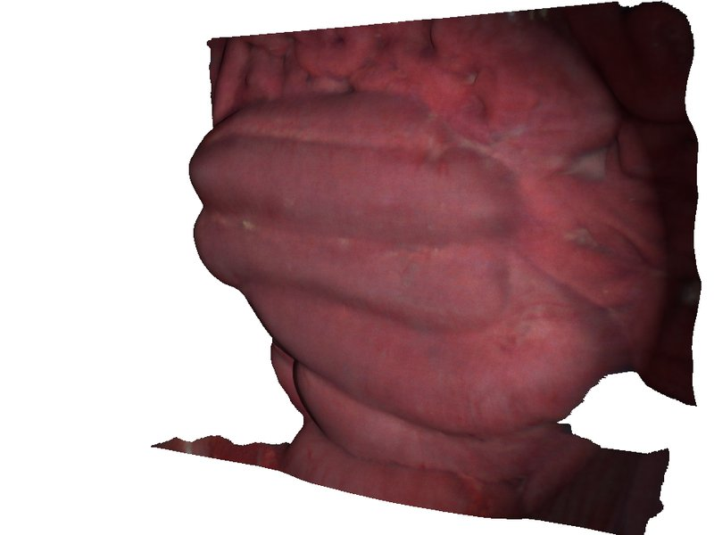
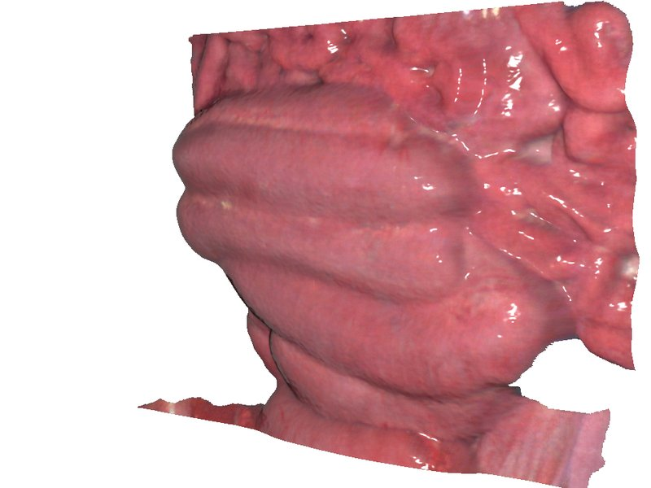
Physiology
Viewpoint and lighting do not change the tissue itself. To change its physiology, we fit the measured spectra to a three-layer optical tissue model with 18 parameters, including oxygen saturation shared across layers and the blood volume, scattering, anisotropy, refractive index and thickness of each layer. As the forward model we use MCMLNet, a neural surrogate of multilayer Monte Carlo light transport, combined with the camera's band responses.
Fitting every pixel would be slow and unstable, so we group the tissue pixels into 128 clusters by spectral similarity and position and fit the median spectrum of each cluster. For each cluster we screen 32,768 tissue states drawn from a Sobol design and refine the four best by gradient descent, on a loss that combines relative reflectance error with the spectral angle. We keep fits only within a spectral angle of 5° and a normalised error of 10%, and we keep every solution close to the best, because different tissue states can produce the same spectrum.
To make an edit, such as lowering oxygen saturation inside a chosen region, we change the fitted state and apply the ratio between the edited and original model spectra to the measured spectrum. The measured texture is therefore changed only by the modelled physiological difference.
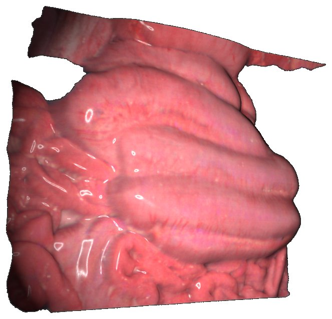
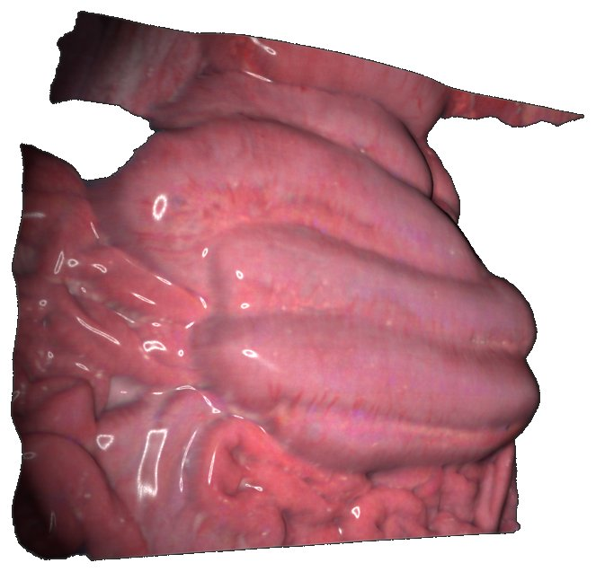
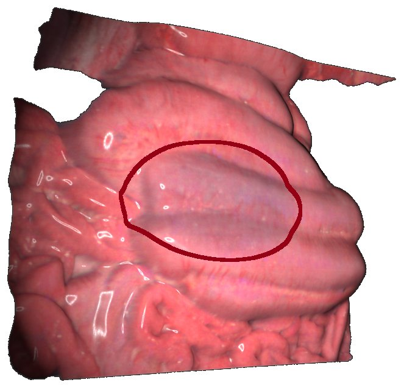
Light transport in curved tissue
The three-layer model assumes a flat slab lit from above, while real tissue is curved and often lit at a grazing angle. To measure what this assumption misses, we simulated photon transport with mesh-based Monte Carlo in tetrahedral meshes of curved surfaces, including cylinders, spheres and folds, at illumination angles from 30° to 89°. We paired each curved case with a flat, normally lit reference of the same composition, across 36 wavelengths from 500 to 760 nm. We then trained a small network with 304 parameters to predict the change in spectral shape from the affected spectrum and its illumination angle, which we compute from the surface normal, so that we can correct curved views towards what the flat model expects.
Surgical simulator in Omniverse
We also build a surgical simulator from the scenes. We export them as USD and open them in an NVIDIA Omniverse extension, where a real acquisition can be inspected from any angle and path traced. In the extension we can add scope lighting, surgical smoke and instrument models, and have an instrument grasp and lift the tissue with finite-element deformation. Because the underlying scene is real, we can use these edits as controlled stress tests for trained models on real anatomy rather than on a synthetic stand-in, and we can pass the same scenes to Replicator for domain randomisation or to Isaac for robot learning.
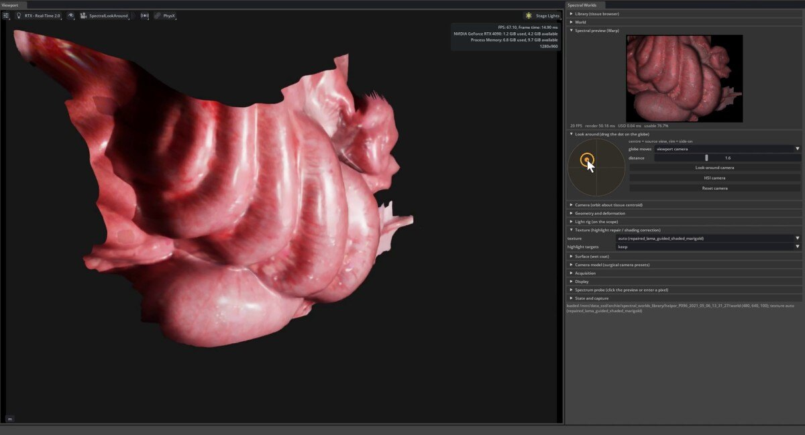
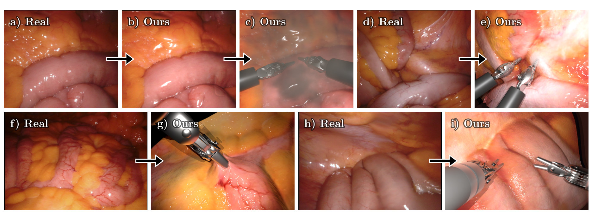
Data
We use porcine open-surgery hyperspectral acquisitions from HeiPorSPECTRAL and Xeno-learning, human minimally invasive hyperspectral data from EnAcuity, the HyKey hyperspectral matching data, and RGB laparoscopy from DSAD, StereoMIS, STIR and SERV-CT.